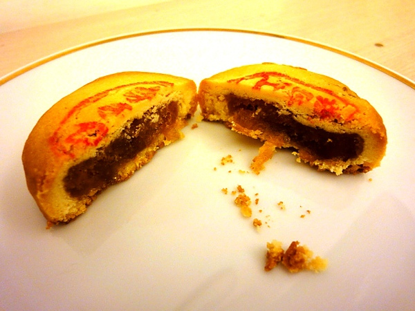
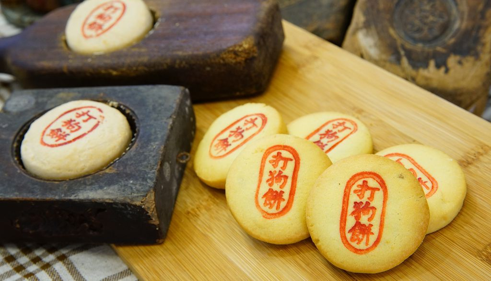
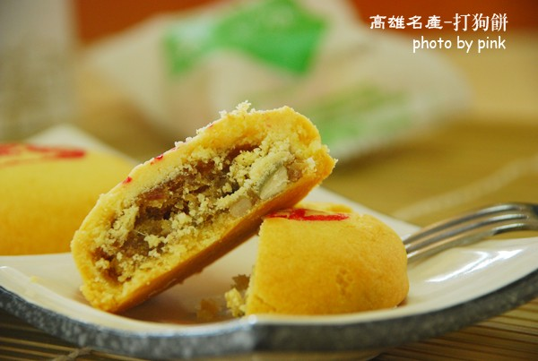
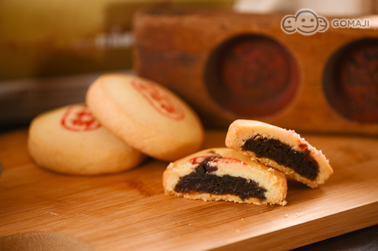

1.由來 黃姿學15歲的兒子遺愛人間 黃姿學細說打狗餅的由來，雖然事過多年，還是難掩其悲傷，她說，與兒子相依為命，孩子為了救溺水的同學而犧牲了自己的性命， 由於太過思念兒子，希望能在夢中與兒子見面，終於有一次夢見和孩子在壽山玩，很高興也很興奮，但孩子卻一直沒說話， 結果兒子一臉嚴肅跟她說：「媽媽，這裡不是壽山，是打狗山，妳不要再想念我了，妳去做打狗餅給單親家庭的小孩吃」。  為了紀念兒子，因而把原有的工作停下來做打狗餅，成立餅舖。 打狗餅鋪總經理黃姿學一生充滿傳奇色彩。她歷經未婚生子，獨自赴日求學尋找出路，備嚐艱辛，卻在終於能與兒子相守的時候， 遭遇了最殘忍的打擊，1993年，時屆國三的兒子呂權峰在一次旗津之旅中，捨身泳渡搜救同學而殉難，這無疑是晴天霹靂。 獨子呂權峰奮不顧身衝向海邊去救同學 當時在現場的同學事後表示，當他試圖阻攔時，呂權峰卻回以「媽媽說，助人為快樂之本」，奮不顧身衝向海邊。 痛失愛子的黃姿學聽聞此語，心碎又自責，更是陷入人生無比的低潮。 為了傳承兒子的心願，以一個外行人帶著一群單親媽媽和單親小孩做餅， 一路走過辛酸與艱苦；直到離世的兒子有次來到夢中向她說：「媽媽，這裡是打狗山，你去做打狗餅，給單親家庭的小孩吃。」說完便自夢中消失。 這個夢開啟了黃姿學製作糕餅的道路。然而從未碰過麵粉的她，又怎能做出未曾見過的「打狗餅」？ 兒子捨身救人溺水遇難， 照兒子夢中遺言開創打狗餅， 照顧單親家庭孩子， 黃姿學表示：「我做打狗餅沒有賺錢啦！賺到的就是讓這些小孩回頭是岸。」 2.傳承 受教於打狗餅時期的末代師傅  黃姿學透過友人的介紹，向一位打狗時期的末代師傅習技， 從此扭轉了糕餅的品質和命運， 不但將「打狗餅」成功傳承與發揚， 更以當地著名文化景點結合地方產業，配合行銷高雄， 研發出一系列具文化背景的精緻糕餅， 並獲得十大伴手禮的榮耀。 3改良 推出改良版的打狗餅 憑著無比的毅力，黃姿學不僅找到了台灣會做打狗餅的末代師傅，更遠赴北海道學習日式傳統做法，結合兩者優點，推出改良版的打狗餅。 此時恰好遇上政府正推動文化創意產業，自然而然起到了相互輝映的作用。 「打狗餅」內餡完全傳承老師傅的堅持，精緻地表現古早味，兼具健康養生概念和傳達台灣傳統文化的元素，
  來源(1)